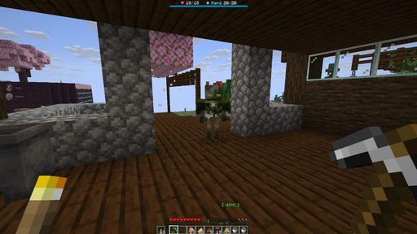
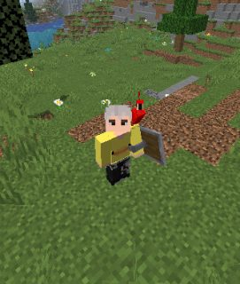
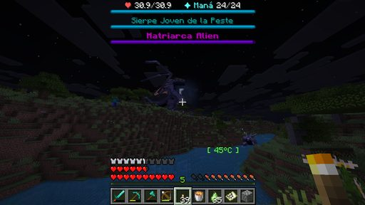
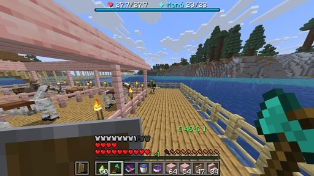
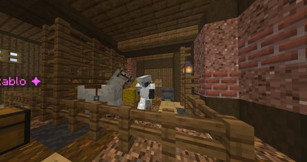
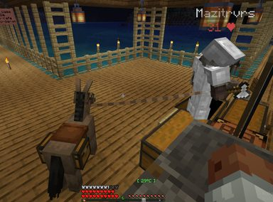
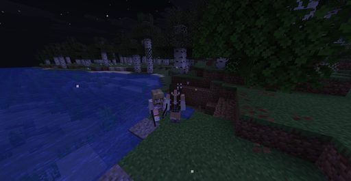
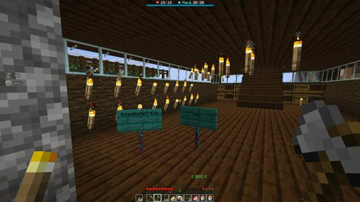

Boletín Oficial del Ayuntamiento del Reino · Se informa, no se alarma
EL HERALDO DEL REINO
Número 324 de agosto de 2026Noche del lunes 24 al martes 25 de agosto
SE PASÓ HORA Y CUARTO ASUSTANDO AL VECINDARIO Y LUEGO LE ILUMINÓ LAS CASAS
Una figura sin identificar se dedicó a mirar por las puertas, tocar a los vecinos y no dejarles salir de casa. Cuando por fin habló, resultó que venía a ayudar. El Ministro Pan no fue visto en ningún momento durante esos setenta y siete minutos, circunstancia que esta Oficina considera irrelevante y que hace constar por rigor.
Redactado por la Oficina de Prensa del Ayuntamiento
PORTADA
Una figura estuvo mirando por las puertas del término desde la una menos cuarto

La imagen que aportó NARUMl. Esta Oficina ha ampliado el original y puede confirmar que hay algo ahí y que está mirando hacia adentro.
Archivo Municipal · pase el ratón para revelarla
El primer aviso entró a las 00:56 y lo dio Rahazzi, que llevaba en el
término siete minutos: «Ayuda, alguien me estaba viendo desde la puerta.»
A partir de ahí los avisos se solaparon. Mazitrvrs declaró, y esta Oficina
reproduce su declaración con el pudor que permite el idioma, que una figura de aspecto
óseo se le acercó por detrás, le tocó y salió corriendo. Añadió a continuación una
petición que consta en acta —«espero que esa declaración no termine en el
periódico»— y que este Ayuntamiento ha valorado detenidamente antes de publicarla.
Rahazzi amplió la suya en términos parecidos: «A mí me tocó el cuerno, me
siento sucio.» Y más tarde: «Tengo miedo de dormir, no quiero que me agarre el
acosador del monte.»
A la 01:01 el asunto llegó a la vía institucional. Mazitrvrs lo planteó
así: «No puede ser que paguemos impuestos al intendente y que nos venga un degenerado a
revolearnos con cosas.» Este Ayuntamiento comparte la preocupación, no comparte la
caracterización y recuerda que los impuestos y el orden público se tramitan en
ventanillas distintas.
A la 01:06 se formuló la única pregunta que esta Oficina no ha sabido contestar,
y la formuló Rahazzi: «¿Dónde está la policía cuando se la necesita?»
A la 01:07 la situación alcanzó su punto más grave. NARUMl comunicó que la
figura se le había plantado en la puerta y que no la dejaba salir de su propia
casa. Se recuerda al vecindario que el término no dispone de un impreso para esto.
El Ayuntamiento hace constar, por rigor y sin atribuirle valor alguno, que el Ministro
Pan no fue visto en el término entre las 00:52 y las 02:15, que es exactamente el
intervalo que abarcan las denuncias. Se advierte de que de este dato no se sigue
nada, que quien insinúe lo contrario deberá acreditarlo por escrito y que a las
02:16 el Ministro estaba en la plaza resolviendo una consulta técnica sobre el bulto
de las ratas con absoluta normalidad.
SUCESOS
El acosador habló a la una y media, dijo llamarse Esqueletreje y resultó ser servicial

Estado final de la convivencia: la criatura, posada en el hombro de un vecino. SerSM15 lo resumió sin necesidad de que nadie se lo pidiera: «cuando no está en la nariz, está en el hombro».
Archivo Municipal · pase el ratón para revelarla
A la 01:25 ocurrió lo que nadie esperaba: Rahazzi dejó de huir y le
preguntó cómo se llamaba. La criatura contestó. Se llamaba Esqueletreje.
Cuatro minutos después, el mismo vecino comunicaba a la plaza: «Me hice amiguito de
Esqueletreje.» Y poco más tarde, consciente de cómo sonaba: «Espero que hayan
conocido a Esqueletreje. No soy esquizofrénico, lo juro.»
A la 01:50 Esqueletreje empezó a hablar en la plaza. Lo hacía en un castellano
propio, de tres o cuatro palabras por frase, que esta redacción ha decidido no corregir.
NARUMl, que hora y media antes no podía salir de su casa, fue la primera en
recibir asistencia. La criatura le explicó el problema —«oscuridad mal»— y le
propuso la solución —«luz»—, y acto seguido le llenó la vivienda de velas.
La vecina se despidió con un «gracias, esqueletito» y con la observación de que ya
no le iban a aparecer monstruos dentro de casa, que es correcta.
Mazitrvrs, el mismo que hora y media antes exigía la intervención del intendente,
le consultó entonces cómo se soporta el calor de las profundidades. Esqueletreje dictaminó
que con bebida, precisó que no valía el agua sino «sumo de posión», y añadió
un extremo que esta Oficina traslada al vecindario porque es técnicamente exacto: el
traje de hierro es malo para el calor.
Se despidió a las 02:13 —«esqueletreje adiós»— y no se le ha vuelto a ver,
salvo a las 07:08, cuando _Cafecito_ denunció que andaba merodeando por su
casa. Antes de irse dejó dos declaraciones que constan en el registro de la plaza. La
primera: que el Emperador no puede quitarlo. La segunda: que el Emperador le cae
bien.
Este Ayuntamiento desea dejar constancia de su satisfacción por el desenlace y hace notar
que el problema se resolvió solo, sin expediente y sin coste para el erario, que es la
vía que esta institución recomienda para todos los problemas.
ADMINISTRACIÓN
Séptimo expediente al Ministro Pan, que nada tiene que ver con lo anterior
Se abre al Ministro Pan el séptimo expediente de su hoja de servicios, y se
abre por un motivo estrictamente formal: no consta dónde estuvo entre las 00:52 y las
02:15. El Ministro no ha sido preguntado. Cuando lo sea, esta Oficina publicará su
respuesta.
Se recuerda que los seis anteriores —la ropa interior tendida, las recalificaciones, los
dos desahucios de ancianas, los once pisos turísticos, lo de la fuente y la conspiración
contra el gobierno en funciones— siguen a la espera de que el gobierno en funciones se
pronuncie. El gobierno en funciones no se ha pronunciado. Con este ya son siete los
expedientes que esperan a un órgano del que no consta quién es.
Esta Oficina quiere subrayar, además, que el Ministro estuvo especialmente atento
durante toda la jornada: atendió a xTheChavitox con lo del tabaco, se desplazó a casa
de NARUMl a investigar un hurto, aclaró a Mazitrvrs que las aguas del término
no se hielan en invierno, y anunció al retirarse: «reporten errores, que seguro
encuentran justo cuando me vaya.» Los encontraron en cuanto se fue.
Consta también que a las 23:26, y sin que nadie se lo preguntara, el Ministro
declaró lo siguiente: «Cada vez que suena la campana creo que ha vuelto Duke y me pongo
nervioso. Le he dicho a mi pareja que se llama Duke para poder decirlo en voz alta.»
Este Ayuntamiento no entra a valorar la vida privada de sus cargos y ha decidido publicarlo
íntegro por si algún día hace falta.
ANOMALÍAS
Tercer filón anómalo del término: esta vez el carbón daba diamantes
A las 00:44, xTheChavitox comunicó a la plaza el siguiente hallazgo:
«Ojo. Me dropeó un diamante el carbón. Aprovechen.» Y añadió, a modo de
explicación: «Estoy tan fuerte que ya pico diamante, no carbón.»
Es el tercer filón anómalo declarado desde la apertura del término, después de la
veta de hierro que no se agotaba y de la piedra que cantaba. Conforme a lo establecido, y
dado que un hecho aislado es una incidencia, dos son una coincidencia y tres son un
procedimiento, este Ayuntamiento anuncia la creación de la Comisión de Estudio del
Subsuelo Rentable, que se reunirá cuando se constituya y se constituirá cuando se
pronuncie el gobierno en funciones.
El Ministro Pan propuso una medida alternativa —«prohíban el carbón»— que
esta Oficina ha registrado, ha valorado y ha archivado.
Se recuerda al vecindario que el mineral del término es bien municipal y que
aprovechar un filón anómalo antes de que llegue el técnico está mal visto, es difícil de
probar y lo ha hecho todo el mundo las tres veces.
ANOMALÍAS
Dos luces cruzaron el cielo, y a la mañana siguiente había una madre en el aire

Lo que fotografió Mazitrvrs a las 05:45, a cuarenta y cinco grados de temperatura. Su declaración completa fue: «qué carajo». Esta Oficina no tiene nada que añadir.
Archivo Municipal · pase el ratón para revelarla
La primera luz la vio SerSM15 a las 21:21 —«vi algo pasando en el cielo,
naranja»—, y Mazitrvrs le preguntó de inmediato si había pedido un deseo, que es
la reacción correcta. LetayReaver aportó su hipótesis: extraterrestres. La
plaza se lo tomó a broma durante ocho horas.
A las 05:30 pasó la segunda, y esta vez Rockchango la anunció formalmente.
Se abrió a continuación un turno de deseos en el que participaron cinco vecinos. Esta Oficina
ha revisado el turno completo y ha determinado que uno solo es transcribible: el de
Rockchango, que deseó que LetayReaver estuviera en su cuarto. Los otros cuatro
constan en el registro y ahí se quedan.
A las 05:45, quince minutos después de la segunda luz, Mazitrvrs fotografió
sobre el término lo que su propia denuncia describe como una Matriarca, acompañada de
una sierpe de menor tamaño. Este Ayuntamiento hace constar que ambas figuras carecen de
alta en el padrón, que no han solicitado permiso de sobrevuelo y que su relación con las
luces de las 21:21 y las 05:30 no ha podido establecerse porque nadie la ha
investigado.
Se recuerda que LetayReaver propuso lo de los extraterrestres ocho horas antes de
que apareciera esto, y que en su momento nadie le hizo el menor caso.
URBANISMO
Expediente 0046 — «La Unión de Caminos», de Mazitrvrs: favorable, y eso nunca ha pasado

La obra a plena luz y a cuarenta y tres grados. El técnico ha hecho constar que la barandilla es innecesaria, que está bien hecha y que le ha gustado, y a continuación ha solicitado que se retire esa última frase del acta.
Archivo Municipal · pase el ratón para revelarla
La Oficina de Urbanismo ha girado visita a la pasarela que Mazitrvrs viene
levantando sobre las aguas del término y que su promotor denomina «La Unión de
Caminos». El expediente arrancó torcido: el primer aviso lo dio LetayReaver a las
20:46 en estos términos, «Mazi, hiciste un puente a mi casa», y no era una
felicitación.
Girada la visita, y por primera vez desde la apertura del término, esta Oficina no
encuentra nada que objetar. La obra une, está terminada, tiene luz y no se cae. El
dictamen técnico es ACEPTABLE, LO CUAL NO SIENTA PRECEDENTE.
La valoración vecinal fue más entusiasta. _Cafecito_ declaró a las 07:44:
«A la verga, Mazi, eres un arquitecto. Cómo mejoró ese puente.»
Consta asimismo que a las 04:56 el promotor se dirigió a la plaza con el siguiente
programa, que reproducimos con su puntuación original: «TODO. DONDE HACE FALTA. YA VIENE.
TODO.» Y que a las 07:24 el vecino ArsarFurro, aprovechando el turno de
deseos de una estrella fugaz, deseó que Mazitrvrs fuera alcalde.
Este Ayuntamiento recuerda que el término no tiene alcaldía, que la creación de una
alcaldía correspondería al gobierno en funciones y que el gobierno en funciones no se ha
pronunciado. Se ruega no insistir.
URBANISMO
Expediente 0047 — media casa de Rockchango, talada por accidente y sin denuncia
A las 02:41, Rockchango comunicó a la plaza que «alguien taló un árbol y
era parte de mi casa», y precisó a continuación que se rompió la mitad.
La autora se identificó un minuto después, sin que nadie se lo pidiera y en mayúsculas.
NARUMl declaró: «PERDÓN, fue mi culpa. Talé un árbol que estaba muy cerca y
tocaban las hojas y se cayó todo. No sabía que era una casa.» Y ofreció reparación.
El perjudicado renunció a ella en el acto. Consta su respuesta literal —«ok, voy a
llorar un rato»— y consta su rectificación treinta segundos más tarde: «no, no, yo
soy un mono capaz.»
La vecina GabbyQuill635, presente, aportó la única propuesta de resolución del
expediente: «PÁGALE.» No se le pagó.
Esta Oficina hace constar que el asunto se resolvió en tres minutos, entre dos vecinos
y sin un solo impreso, y advierte de que semejante procedimiento no puede convertirse en
costumbre. La calificación es VIVIENDA ARBÓREA, RIESGO ASUMIDO POR EL PROPIETARIO: al
construir dentro de un árbol se asume que el árbol es un árbol.
URBANISMO
Expediente 0045, ampliación — «El Huevo» de GabbyQuill635 va a ser más grande
Consta en esta Oficina, por declaración de la propia interesada a las 07:14, que
el huevo será más grande. No consta solicitud de licencia de ampliación.
Se hace notar que la calificación del inmueble sigue abierta desde el número anterior,
cuando el técnico no supo rellenar el apartado de forma, y que la ampliación anunciada no
resuelve esa duda: la agranda.
El vecino Rockchango aportó a las 02:33 el siguiente elemento de juicio, que
se incorpora al expediente: «tengo un huevo en el inventario, se parece a tu casa.»
Y Mariowo_ añadió a las 03:05 la única valoración estética recibida hasta la
fecha: «qué bonito está tu huevocasa.»
Calificación provisional: SIGUE SIENDO UN HUEVO, Y AHORA CON PROYECTO.
URBANISMO
Convocatoria: el domingo se inspeccionan las casas feas, y el Ministro traerá fuego
El término de noche, desde el aire. Todo lo que se ve en esta imagen está construido en madera. Se ruega a los propietarios que tomen nota de ese detalle antes del domingo.
Archivo Municipal · pase el ratón para revelarla
Este Ayuntamiento convoca al vecindario a la jornada de inspección urbanística del
domingo, anunciada en la plaza a las 21:04 por el Ministro Pan en los
siguientes términos: «¿Están preparados para el evento del domingo? Las casas feas les
prendo fuego.»
Requerido para que aclarase si se trataba de una figura retórica, el Ministro no aclaró
nada. Mazitrvrs hizo notar entonces que casi todas las casas del término son de
madera, y el Ministro respondió: «mejor aún.»
Horas después, el Ministerio de Construcciones repartía el cartel oficial de la
jornada, que puede verse en este mismo número. En él la cita aparece descrita como un
concurso de viviendas con premio para el primer puesto, y no se menciona el
fuego en ningún momento.
Esta Oficina recuerda que la potestad sancionadora en materia de ornato corresponde a la
Oficina de Urbanismo, que la Oficina de Urbanismo sanciona mediante acta y que el
acta no arde. Se recomienda no obstante al vecindario que dedique la semana a mejorar
sus fachadas, por los dos motivos.
ADMINISTRACIÓN
Se retuvo en las puertas a _Cafecito_ por impostora, y era ella
A las 06:51 accedió al término la vecina _Cafecito_ tras un periodo de
retención en los accesos cuya duración esta Oficina no está en condiciones de precisar. Su
declaración al entrar fue la siguiente: «Por fin puedo entrar al Reino. Me habían
prohibido el acceso en las puertas, como si fuera una impostora, pero fue un error de la
administración. Yo sí pagué mi estadía acá.»
Este Ayuntamiento ha revisado el padrón y confirma que la vecina consta, que
consta desde el primer día y que fue protagonista del suplemento del número anterior,
circunstancia que debería haber facilitado su identificación en la puerta.
Se ha subsanado. No se abre expediente al personal de accesos porque el personal de
accesos no existe: la puerta comprueba sola, y comprobó mal.
La interesada insistió en dos ocasiones más a lo largo de la mañana en que es
ciudadana legítima del Reino. Esta Oficina lo confirma sin reservas y lamenta las
molestias, en la medida en que esta Oficina lamenta cosas.
ADMINISTRACIÓN
Relación de ausencias: Fátima sigue sin acudir y no se ha visto un solo conejo
Tercera jornada consecutiva sin noticias de Fátima, que no acude a su puesto desde
la apertura del término. El expediente sigue abierto. Nadie la ha visto. Esta Oficina ha
dejado de preguntar por no molestar.
Se hace constar igualmente que no se ha avistado un solo lagomorfo desde que
concluyeron las ocho batidas de la jornada inaugural. La Campaña de Control de
Lagomorfos permanece formalmente abierta, sin efectivos, sin presupuesto y sin objeto.
El Ayuntamiento considera ambos asuntos en vías de resolución.
ADMINISTRACIÓN
PARTE DEL PULSO — cuarenta y una medidas correctoras, ninguna de ellas grave
Relación de medidas correctoras adoptadas desde el número anterior. Es la relación más
larga publicada hasta la fecha. Ninguna reviste gravedad, todas estaban previstas y este
Ayuntamiento agradecería que se dejara de mirar la cifra.
Se reduce la población de ratas de alcantarilla. A las 02:16, NARUMl
denunció que «a Café y a mí nos cuesta horrores pegarles» y que ella,
_Cafecito_ y Rahazzi habían caído esa misma noche por su causa. La inspección
ha confirmado el extremo y ha ido más lejos: la rata era la criatura más abundante del
término, y con el doble de densidad que ninguna otra. Corregido. Aun así, esta jornada
han causado ocho defunciones y siguen en el podio.
La mesa de encantamientos cobraba en una moneda que no existe. Se ha detectado que
el mostrador de encantamientos venía aceptando un cacahuate distinto del cacahuate del
término. Se ha corregido y se ruega a quien pagara con el falso que no lo comente.
Al morir, el vecino no volvía a su cama. Este es el defecto que más disgustos ha
causado y el más difícil de explicar sin alarmar: durante un tiempo, quien caía no
despertaba donde dormía, sino donde le tocara. Subsanado. Se recomienda dormir en cama
propia y no en la del herrero, aunque el herrero no se queje.
Las puertas de Valdemojón y de Puerto Negro no se dejaban abrir. Ambas localidades
tenían restringida la interacción completa por una redacción demasiado amplia de sus
ordenanzas, con el resultado de que tampoco se podía hablar con sus vecinos: quedaban
afectados Roberto Mandango y los cuatro doctores. Reabiertas.
Y además: el arcón del establo no abría, porque el mostrador intentaba
pintar veintiocho casillas en veintisiete · la mesa de cartografía no decía quién te
entregaba cada mapa, y ya lo dice · los objetos de encargo tirados al suelo no
desaparecían nunca, y uno de ellos llegó a dejar tieso a su portador · los cuadros
y los marcos de la Granja podían quitarlos manos ajenas, y los puentes también ·
la alfombra aseguraba no estar señalada cuando lo estaba · la poda del puesto de
guardia no se hacía nunca · el estanco seguía sin admitir las hojas de tabaco pese
a lo corregido en el número anterior, porque el nombre va grabado en la propia hoja · el
barco de la Zona se abría solo, y ya no · la Lectura Pública repartía objetos
que no debía · Papriko manda ahora a Aniceto, y se han repuesto los tres fragmentos
que perdió · las manos apagadas no eran invisibilidad, sino música · y se ha revisado
el nombre de todos los encargos del término, porque dos que se parecían demasiado
hacían que al retirarte uno se te retirase el otro.
Se hace constar que no se ha abierto ni un encargo nuevo en toda la jornada: el
término mantiene los 274 del número anterior. Este Ayuntamiento prefiere consolidar.
Hubo asimismo seis cierres técnicos por revisión del pulso, cuatro de ellos con
vecindario dentro. Ninguno superó los ochenta y un segundos, extremo del que esta
Oficina se enorgullece y que piensa repetir a menudo.
SOCIEDAD
Un panda se perdió en casa de NARUMl a las once y media y amaneció adoptado por otra
El animal, ya instalado en su cercado. Se ha construido de madera clara y flor de cerezo, y el técnico hace constar que es la única vivienda del término que ha superado la inspección a la primera, cosa que su ocupante no ha solicitado.
Archivo Municipal · pase el ratón para revelarla
A las 23:23, NARUMl comunicó a la plaza lo siguiente: «Tengo un panda en
la casa, creo que se perdió.» No se dio parte al Negociado de Animales Extraviados
porque no existe.
A las 07:16 de la mañana siguiente, y a considerable distancia, _Cafecito_
comunicó lo siguiente: «La mascota vino a mí. Vino a mi casa, se adoptó solo, ahora es mi
mascota.» Un minuto después le puso nombre: Pandamonio.
Este Ayuntamiento no está en condiciones de afirmar que se trate del mismo animal, ni de
negarlo, y hace constar que la adopción se tramitó íntegramente por iniciativa del
adoptado, figura que el reglamento no contempla.
Consta una única objeción, y la formuló la criatura del monte a las 02:10, en el
transcurso de su breve etapa como asesor vecinal. Sobre el panda dictaminó, textualmente:
«panda no bien», «no gusta», «gordo», «tonto». Y ofreció
matarlo. Se declinó la oferta.
SOCIEDAD
GabbyQuill635 buscaba un panda café desde las dos y media, y a las ocho lo tenía
La vecina y su animal, cruzando la pasarela. Fotografía aportada por _Cafecito_, que tituló: «Gabby llevando su gordito».
Archivo Municipal · pase el ratón para revelarla
A las 02:39, Rockchango ofreció a GabbyQuill635 cuatro cotorros que
había visto en casa de Jooan786. La oferta fue rechazada con una precisión que esta
Oficina considera ejemplar: «Ya tengo todos los que quiero, gracias. Estoy buscando un
panda café.»
El vecino se comprometió a avisar si veía uno. A las 08:01 la interesada aparecía
en la pasarela acompañada de un panda.
Este Ayuntamiento subraya el caso como ejemplo de tramitación vecinal eficaz: se
formuló una petición concreta, se identificó al proveedor y se resolvió en cinco horas y
veintidós minutos, todo ello sin pasar por esta institución, que es probablemente la
causa.
SOCIEDAD
El establo abrió con existencias, y hubo quien preguntó el precio antes de montarse

Interior de las cuadras. ArsarFurro preguntó a las 05:58 cuánto costaban. Esta Oficina no tiene constancia de que nadie le contestara.
Archivo Municipal · pase el ratón para revelarla
Se hace constar el buen funcionamiento de las cuadras del término, que a lo largo
de la jornada despacharon montura a varios vecinos y que constituyen, junto con la pasarela
de Mazitrvrs, el segundo servicio del que este Ayuntamiento no ha recibido queja alguna.
xTheChavitox y LetayReaver acreditaron ambos el mérito de Horse Luis
Tenía Razón, a las 03:26 y a las 05:45 respectivamente. Se recuerda que Horse Luis
llevaba razón desde el principio y que en su momento se dudó de él.
Consta también, a las 21:11 y en boca de SerSM15, la siguiente declaración
de intenciones: «Estoy haciendo acrobacias con el caballo.» El Ayuntamiento no
dispone de ordenanza aplicable y prefiere no crear una.
SOCIEDAD
Se acreditan dos convivencias con montura, y el censo no sabe dónde anotarlas
Mazitrvrs en su cuadra. La fotografía la aportó Rockchango con el pie «mazi y su esposa». Esta Oficina la publica sin suscribirlo.
Archivo Municipal · pase el ratón para revelarla
Esta jornada se han documentado dos vínculos entre vecino y montura que el censo de
animales de compañía no contempla, y que se consignan aquí a la espera de que alguien redacte
el impreso.
El primero lo aportó Mazitrvrs a las 18:52 de la víspera, retratando a
SerSM15 sobre su caballo negro y titulando la escena «Lord Sermi y su leal
corcel». El tratamiento de lord no consta en el padrón.
Se recuerda que toda montura debe inscribirse en el censo antes de entrar en
servicio, y que esa norma se aprobó tras el caso de la dinastía Patroclo, del que este
Ayuntamiento sigue sin querer hablar.
SOCIEDAD
El segundo vínculo con montura lo describió un vecino en dos palabras

Mazitrvrs en su cuadra, a las siete y veinte de la mañana. La fotografía la aportó Rockchango con el pie «mazi y su esposa». Esta Oficina la publica sin suscribirlo.
Archivo Municipal · pase el ratón para revelarla
El segundo caso lo documentó Rockchango a las 07:20, y esta Oficina se
limita a hacer constar que la descripción aportada por el autor consta de dos
palabras y que no piensa ampliarlas.
El interesado, Mazitrvrs, no ha desmentido nada. Cabe recordar que el mismo
vecino ha levantado esta jornada la única obra del término que ha obtenido informe
favorable, que la plaza le desea la alcaldía y que a las 08:01 se precipitó desde
altura considerable y hubo que recomponerlo con una pala.
Este Ayuntamiento entiende que el vecindario tiene derecho a saber estas cosas todas
juntas.
SOCIEDAD
Se localiza una embarcación encajada en la pared de un barranco helado
La embarcación, a media altura y sin explicación. Fotografía aportada por xTheChavitox a las 05:16, sin comentario.
Archivo Municipal · pase el ratón para revelarla
Consta en esta Oficina la localización, en las tierras heladas del norte, de una
embarcación de madera encajada en la pared vertical de un barranco, a varios metros del
agua y sin vía de acceso visible.
La aportó xTheChavitox, que estuvo especialmente activo durante toda la jornada:
acreditó quince méritos, más que ningún otro vecino, entre ellos el del Guardián
del Pecio, el del Almanaque y el de la Química de Salón. También hizo
explotar un laboratorio a las 23:50 y solicitó el reembolso.
Esta Oficina no abre expediente sobre la embarcación. Se limita a hacer constar que está
ahí, que no es de nadie y que quien la subió no lo ha contado.
SERVICIOS
El término estrena gremio mercantil: carnicería, escoltas y una semilla por un equipo entero
La jornada ha registrado una eclosión de iniciativa privada que este Ayuntamiento
celebra, no ha autorizado y no piensa gravar todavía.
NARUMl abrió el turno a las 23:43 preguntando formalmente si se podían hacer
emprendimientos y proponiendo vender carne a cambio de hierro. Obtenida la autorización
verbal del Ministro, anunció carnicería.
SerSM15 ofreció a las 02:06servicio de escolta por cinco
cacahuates. Esta Oficina hace constar, en interés del consumidor, que el prestador del
servicio murió siete veces esa misma jornada, seis de ellas en un intervalo de once
minutos, y que su lema publicado es «soldado advertido no muere en guerra».
xTheChavitox ofreció a las 23:44una semilla de trigo por un equipo
completo de diamante, y ante la falta de interesados mejoró su oferta a dos semillas
de trigo. No consta operación cerrada.
Se recuerda que el término no dispone de registro mercantil, que no está previsto crearlo
y que quien quiera abrir un negocio puede abrirlo, extremo que esta Oficina lamenta
tener que reconocer por escrito.
SOCIEDAD
El Emperador habló a las seis y media, y ocho minutos después lo estaban buscando
A las 06:30 de la mañana, el Emperador Duke se dirigió al vecindario para
anunciar un cierre técnico por revisión del pulso. Fue su única intervención en toda
la jornada y duró una línea.
A las 06:38, GabbyQuill635 preguntó a la plaza: «Duke.» Y a las
06:39: «¿estás?» No obtuvo respuesta.
Se recuerda que la vecina declaró en el número anterior, doce veces seguidas y en el
plazo de seis minutos, lo que estaba dispuesta a hacer por el Emperador, y que después lo
rebajó a una cena. Sigue esperando.
Consta además que LetayReaver abrió la jornada, a las 20:12, con esta
pregunta: «¿Duke está?». Y que Mazitrvrs le contestó lo que contesta todo el
mundo: «No creo.»
Este Ayuntamiento hace constar que el Emperador estuvo, que estuvo exactamente
durante el minuto necesario para anunciar un cierre técnico, y que eso es gobernar.
SOCIEDAD
Se registra una protesta fiscal, y esta Oficina no sabe a qué impuesto se refiere
A la 01:15 de la madrugada, SerSM15 formuló en la plaza la siguiente
objeción tributaria, que se reproduce con sus abreviaturas: «¿Impuesto de qué? Dicen que
nos ayudan y solo suben los impuestos.» Venía de la queja de Mazitrvrs sobre lo
que se paga al intendente.
Esta Oficina ha revisado la ordenanza fiscal del término y comunica al vecindario que
no existe ningún impuesto vigente, que no se ha girado recibo alguno desde la apertura
y que, por consiguiente, nadie ha pagado nada.
Se agradece no obstante la protesta, que ha sido archivada con carácter preventivo por si
llegara a ser necesaria.
SOCIEDAD
Una noche en la playa, a la que esta Oficina no pensaba dedicar espacio

La orilla a las siete y media de la mañana, con la marea alta y dos vecinas mirando el agua. Es la única fotografía de la jornada en la que no pasa absolutamente nada.
Archivo Municipal · pase el ratón para revelarla
Se incorpora esta imagen a petición de nadie y por decisión del Negociado de Vida
Vecinal, que ha alegado que un número con dos plagas, un acosador, una casa reventada y
una Matriarca sobrevolando el término necesitaba una playa.
La aportó _Cafecito_ a las 07:37, acompañada de una vecina. Esta Oficina no
da el nombre porque no se lo ha pedido nadie y porque la vecina no ha hecho nada.
Este Ayuntamiento agradece la fotografía y hace constar que la orilla es de titularidad
pública, que puede pisarla cualquiera y que nunca lo hace nadie porque a esa hora todo el
mundo está muriéndose en una mina.
Espacio cedido · Ministerio de Construcciones del Reino
El cartel oficial, tal y como se ha repartido. Consta que lo dibujó alguien del Ministerio y que se le pagó con cargo a la partida de señalización viaria.
PRIMER CONCURSO DE VIVIENDAS DEL REINO
Domingo 30. El Ayuntamiento quiere entrar en vuestras casas, verlas por dentro y tomar nota. Dice que es para valorar el esfuerzo vecinal.
Qué se valorará. La fachada, que no parezca hecha con materiales recogidos
durante una pelea. El interior: muebles, detalles y algo más que cofres apoyados
contra la pared. La utilidad —taller, almacén, huerto, cocina o cualquier cosa que
suba el precio por noche—. El encaje con el Reino, que combine con la ruina local sin
espantar al comprador. Y la originalidad: ideas que el Ayuntamiento pueda copiar sin
pagar derechos.
Durante la visita se tomará nota de ubicación, tamaño, vistas, decoración, accesos y
sótanos, así como de cualquier otro dato de utilidad para una empresa externa que,
oficialmente, no existe.
Habrá premio para el primer puesto. El Ayuntamiento aún está decidiendo si
llamarlo premio, ayuda vecinal o «bonificación por facilitar datos inmobiliarios de alto
valor».
Para preparar la casa, en Cerezal del Valdemojón hay una tienda de muebles
patrocinada por el Ayuntamiento. Casualidad absoluta. Comprad sillas, mesas, alfombras y
armarios: todo lo que haga vuestra casa más bonita y más fácil de alquilar por cantidades
ofensivas.
Se recomienda limpiar, decorar y no dejar a la vista nada que baje la tasación.
El Ayuntamiento insiste en que este concurso no guarda relación alguna con futuras ventas,
alquileres, compras baratas, cesiones a terceros ni con esas casas de huéspedes que se
alquilan por noche a desconocidos.
Ministerio de Construcciones del Reino · con supervisión del Ayuntamiento, que solo quiere mirar, medir y quedarse una copia
Suplemento de interés humano · se reparte gratis con este número
LE EXPLOTÓ LA CASA, LE ROBARON EL CARBÓN Y DURMIÓ COMO NADIE: LA JORNADA DE NARUMl
Segunda entrega de esta sección. La elegida es NARUMl y el criterio vuelve a ser estrictamente objetivo: murió doce veces, más que nadie en el término, y terminó la jornada anunciando en la plaza que era la primera habitante en dormir una noche entera. Esta Oficina no ve contradicción alguna entre ambos datos y se limita a dejarlos por escrito.
Oficina de Prensa · Negociado de Vida Vecinal
LA CASA
Abrió su propia puerta con un pico y la vivienda entera se vino abajo
La obra, ya en marcha, con la flor de cerezo detrás. NARUMl la anunció así: «día de remodelación para Cafecito y para mí, próximamente nuestros negocios abiertos».
Archivo Municipal · pase el ratón para revelarla
A las 23:52 de la noche del lunes, esta Oficina recibió el siguiente parte, en
mayúsculas y en tres avisos consecutivos: «ABRÍ LA PUERTA CON UN PICO», «Y ME
EXPLOTÓ LA CASA 9×9», «EXPLOTOOOOOO».
Requerida por el Ministro Pan para que confirmara el instrumento —«¿con un
pico??»—, la interesada confirmó el instrumento.
La reacción de la propietaria es lo que ha llevado a esta Oficina a dedicarle un
cuadernillo. Treinta y cuatro minutos después de quedarse sin vivienda, a las 00:26,
declaraba en la plaza: «Ya que mi casa explotó, empiezo remodelación para abrir el
negocio. Después paso propaganda. Va a haber buenas ofertas.»
El Ministro, que estaba presente, aportó el único consuelo institucional del que dispone
esta administración: «no hay mal que por bien no venga.»
Preguntada por lo que necesitaba para la obra, respondió que carbón. Y explicó por
qué le hacía falta, lo que dio lugar al segundo asunto de este suplemento.
EL HURTO
Denunció que le robaban el carbón del horno, y la investigación duró cinco minutos
NARUMl denunció a las 00:28 que a ella y a _Cafecito_ les habían
sustraído el carbón del horno dos días seguidos. Preguntada por si lo tenían
protegido, contestó: «No sabía que se podían proteger. Igual es solo carbón, no pasa
nada.»
El Ministro Pan se personó en el domicilio, inspeccionó el horno y emitió a las
00:33 el siguiente dictamen: «Narumi, aquí nadie ha robado nada.»
Tres minutos después, y sin que mediara hallazgo nuevo alguno, el mismo Ministro declaraba
en la plaza: «Estoy seguro de que fue Chavito quien robó el carbón. No tengo pruebas,
pero tampoco dudas.» Y anunció recompensa por su cabeza: dos semillas.
El aludido, xTheChavitox, colaboró de inmediato con la instrucción: «Concuerdo.
¿Quién es ese Chavito? Para ir a lincharlo.»
Esta Oficina hace constar que el vecino SerSM15 aportó el único argumento sólido del
expediente —«¿quién se va a pegar de unos carbones? Es lo que más abunda aquí»—
y que la recompensa de dos semillas sigue vigente.
EL ÁRBOL
Taló un árbol, el árbol era media casa, y confesó antes de que la buscaran
Este suplemento no puede pasar por alto que la protagonista derribó media vivienda
ajena a las 02:41 y que se entregó un minuto después, en mayúsculas, sin que nadie
hubiera empezado a preguntar.
El expediente completo consta en la sección de Urbanismo de este mismo número. Aquí se
recoge únicamente el dato que esta Oficina considera relevante para el retrato:
confesó, se disculpó dos veces y ofreció ayuda, todo ello en el plazo de
cuarenta segundos.
Se hace notar que en el mismo término hay siete expedientes abiertos a un cargo público
que no ha confesado ninguno.
LA AMISTAD
El que no la dejaba salir de casa acabó llenándole la casa de velas

El interior, ya iluminado. La vecina lo describió así: «me dejó un regalo, para que no se me llene de bichos la casa». Los carteles son suyos.
Archivo Municipal · pase el ratón para revelarla
A la 01:07, NARUMl era la vecina más perjudicada por el acosador del monte:
no podía salir de su propia vivienda y así lo comunicó a la plaza, seguido de un
«¡POLICÍA!» que esta Oficina archivó por no constar tal cuerpo.
A la 01:42, treinta y cinco minutos después, la misma vecina declaraba: «No
tuvimos una buena primera vista, pero ahora somos amigos.»
A la 01:53, la criatura le había explicado que la oscuridad es lo que atrae a los
bichos, le había instalado iluminación en toda la vivienda y se había despedido con un
«nada» cuando ella le dio las gracias.
Esta Oficina hace constar que la instalación carece de licencia, que no se ha
tramitado boletín y que no piensa exigirlo.
LA ENFERMERÍA
A las ocho de la mañana montó un servicio de urgencias, y cobró por la llamada
A las 08:01, Mazitrvrs se precipitó desde altura considerable. A las
08:14 volvió a hacerlo. La primera de las dos caídas dio lugar al episodio sanitario
más completo documentado hasta la fecha en el término.
_Cafecito_ dio la voz de alarma con un realismo que esta Oficina ha decidido no
reproducir íntegro: «Mazi murió de manera horrible. Sus sesos están por todo el piso.
¡Ayuda! ¡Algún médico!»
NARUMl se identificó como enfermera y asumió la asistencia. Emitió
diagnóstico —«Estado: muelto»—, procedió a la reconstrucción del paciente con ayuda
de la denunciante, que aportaba las piezas con una pala, y reconoció un error de montaje
cuando _Cafecito_ le hizo notar que le había puesto un ojo del otro lado.
El paciente, consciente durante todo el procedimiento, aportó las siguientes
observaciones clínicas: «mi pierna no va donde está» y «escucho borroso».
La enfermera dictaminó que caminaría rengo y dio el alta.
La factura la emitió _Cafecito_: cincuenta cacahuates por haber llamado a
emergencias. NARUMl precisó a continuación que ella era emergencias y que
no hay reembolsos.
Este Ayuntamiento reconoce que el término no dispone de servicio sanitario y que,
en ausencia de él, el vecindario ha montado uno en cuatro minutos con una pala. Se estudiará
la manera de no tener que agradecerlo por escrito.
EL DESCANSO
Y a las diez y media anunció que había dormido una noche entera
La última declaración de la jornada, a las 10:37 de la mañana, fue suya y decía
así: «Soy la primera habitante en dormir toda una noche.»
Esta Oficina ha comprobado el extremo y no puede confirmarlo ni desmentirlo, porque
nadie lleva ese registro. Sí puede confirmar lo siguiente: que en esa misma jornada la
interesada murió doce veces, perdió su vivienda por explosión, denunció un
hurto de carbón, derribó media casa ajena, hizo amistad con el acosador del
monte, abrió una carnicería y atendió una urgencia.
Y que fue la última vecina en abandonar el término, a las 11:38.
Esta Oficina no saca conclusión alguna. Se limita a dejarlo por escrito, que es para lo
que está.
El parte de la jornada
Duración de la jornada
17 h 23 min, de las 20:56 a las 14:19
Vecinos en el término
13 (más el Emperador y el Ministro)
Altas tramitadas
1 — Rahazzi, a las 23:49
Máxima concurrencia
9 a la vez, a las 05:51 de la mañana
Defunciones
40
Muertes por Bicha del granero
13 (primera causa del término)
Duración del acoso
1 h 17 min, de las 00:56 a las 02:13
Ausencia del Ministro
1 h 23 min, de las 00:52 a las 02:15
Relación entre ambas cifras
ninguna
Expedientes abiertos al Ministro
7
Filones anómalos declarados
3 — hierro, piedra y carbón
Comisiones creadas
1, que aún no se ha constituido
Viviendas explotadas por su dueña
1
Viviendas taladas por error
media
Expedientes de obra
3 abiertos, 1 favorable (el primero de la historia)
Encargos abiertos
274 — los mismos que la jornada anterior
Medidas correctoras
41
Cierres técnicos
6, ninguno de más de 81 segundos
Intervenciones del Emperador
1, de una línea
Impuestos vigentes en el término
0
Última vecina en marcharse
NARUMl, a las 11:38
Última presencia en el término
el Ministro Pan, a las 14:19, tras cuatro minutos dentro
Aviso oficial
El Ayuntamiento del Reino informa de que la figura conocida como el acosador del monte no
guarda relación alguna con esta institución, ni con el Ministerio, ni con ningún cargo
público del término. Se recuerda que la coincidencia horaria entre su aparición y la ausencia
del Ministro Pan ha sido examinada por esta Oficina y no ha llevado a ninguna
parte, y que quien desee sostener lo contrario dispone del Archivo, del horario de oficina y
del impreso correspondiente, por duplicado.
Se comunica asimismo que el término no tiene impuestos, que nunca los ha tenido y que las
protestas fiscales registradas la pasada madrugada han sido archivadas con carácter preventivo.
Queda convocada la jornada de inspección urbanística del domingo. Se recuerda a los
propietarios que la Oficina de Urbanismo sanciona mediante acta y que cualquier otro
método que se anuncie en la plaza carece de amparo reglamentario, con independencia de
quién lo anuncie y de lo que traiga.
No se admiten reclamaciones por carbón sustraído sin protección, por embarcaciones halladas en
paredes verticales, ni por miembros colocados del revés durante una asistencia de urgencia
prestada por quien no es sanitario.